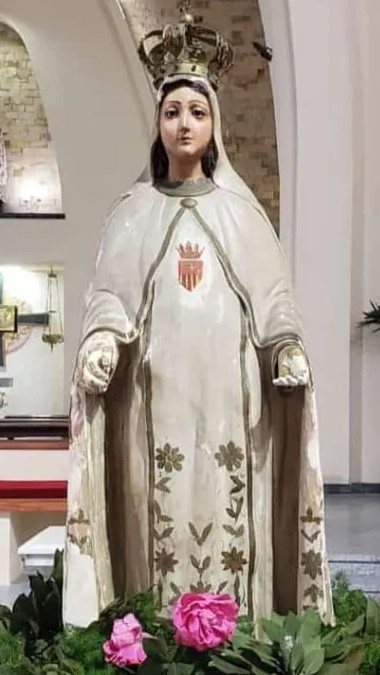

Nuestra Patrona: María de la Merced

Imagen venerada en la parroquia
Nuestra Señora de la Merced —también llamada Virgen de la Misericordia— es venerada como redentora de los cautivos y protectora de quienes sufren. Su devoción nació en el siglo XIII, cuando se apareció a San Pedro Nolasco, San Raimundo de Peñafort y al rey Jaime I de Aragón, inspirando la fundación de la Orden de la Merced para liberar cristianos prisioneros.
En cada estampa, María se muestra con manto blanco y escapulario, llevando sobre el pecho el escudo mercedario, signo del amor liberador de Cristo. Su fiesta litúrgica se celebra el 24 de septiembre, día en que nuestra parroquia se viste de gala para honrarla.